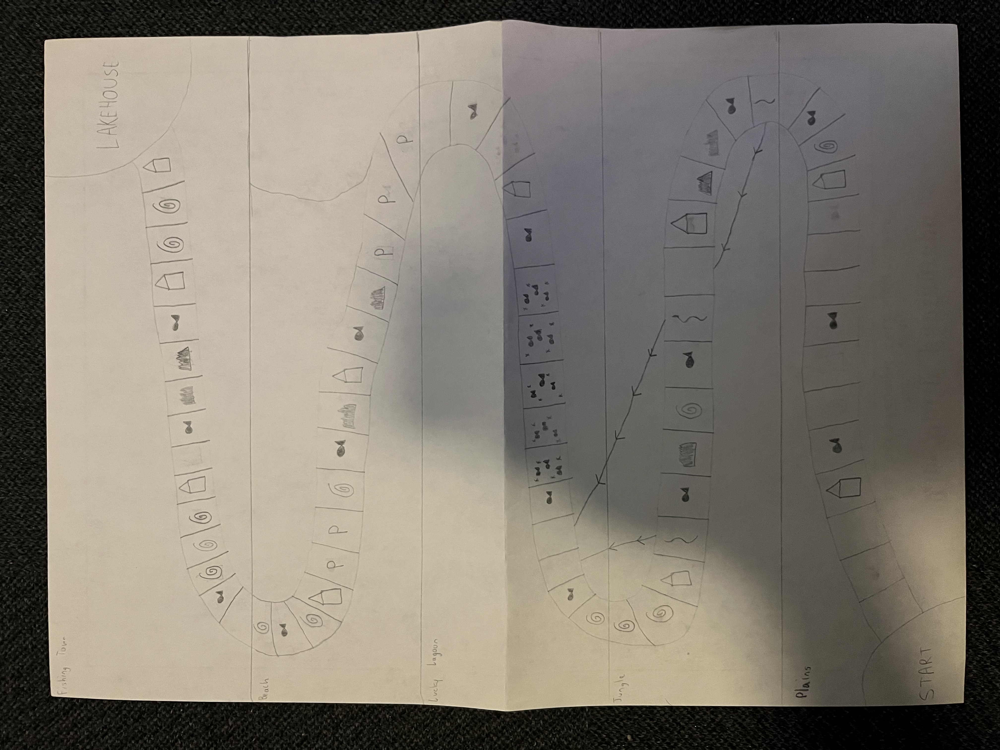
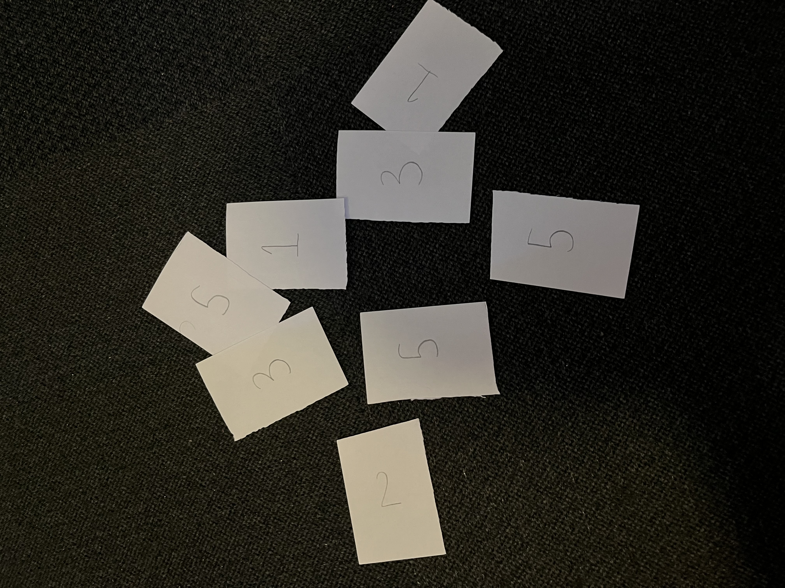

Christopher's Portfolio
Rowed to Glory
Rowed to Glory is a linear, multiplayer board game in which your goal is to collect the most fish before everybody reaches the end. In order to collect fish, players must land on fishing spaces and roll dice to collect fish based on the amount shown on the dice. In order to move across the board, players must draw cards and play one of the cards in their hand to move the same amount of spaces shown on the card. Players can also collect upgrades at boat shack spaces that help them move extra spaces on the board or collect extra fish at fishing spaces.
 